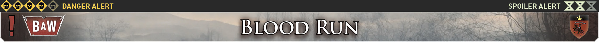
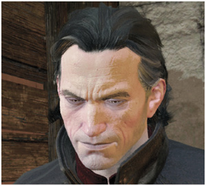
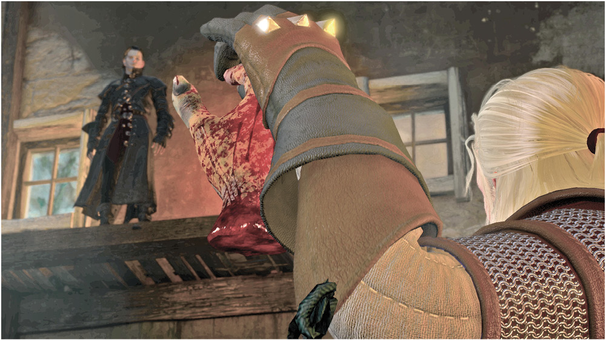
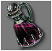
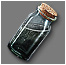
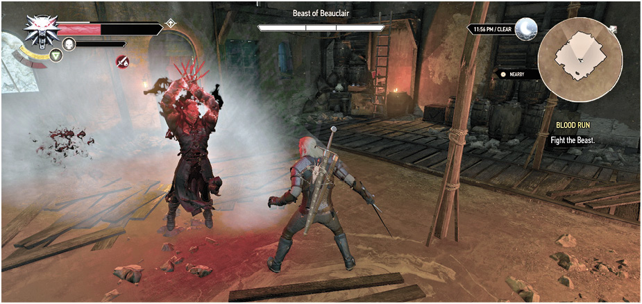

Related Quests: Main Quest: The Beast of Toussaint , Main Quest: La Cage au Fou
Locations :
Characters: Dettlaff van der Eretein, Emiel Regis Rohellec Terzieff-Godefroy, Palmerin de Launfal
Enemies: Beast of Beauclair
QUESTING DECISIONS
This quest is accessible immediately once you have completed Blood and Wine: Main Quest: The Beast of Toussaint .
 Dettlaff van der Eretein You approach the greenhouse with the Duchess just in time to see a pool of blood leading to the remains of Milton, and a figure crouched over the corpse. It bounds out of the greenhouse with almost super-human deft, leaping across the river. You follow, having trouble keeping up with the most agile foe.
 Cornering the fellow in an old warehouse, you produce the severed wrist, and confirm its origin; your adversary has since grown another one, it seems. Striking up a conversation about butchering innocents, the gaunt gentleman asks how many you’ve struck down yourself. Answer how you wish. Apparently the Beast has one more victim left to murder. But you’ll not get the chance to warn the Duchess, if this vampire has his way. He puts on his unhappy face, and the fight immediately starts!
The Beast of Beauclair Vulnerabilities


Defeating the Beast of Beauclair: Dettlaff’s Attacks
The Beast of Beauclair has the following attacks and maneuvers to be aware of:
Dettlaff is inhumanely fast, and you should remain extremely cautious when fighting this Higher vampire. With super-human speed and strength, he uses fog to literally disappear, and dash out of to claw with almost unmatched ferocity. This mist is also how he quickly changes position; almost faster than you can blink!

Light Attack (Melee): Expect a light attack with his talons; there are three variations of this, and all are best parried.
Strong Attack (Melee): Watch for a slightly slower, more pronounced strike with his talons. There are three variations of this, and all should be parried, or better yet, countered so you can quickly deal damage back to him.
Combination Attack (Melee): Expect a combination of three to five connected strikes, with two variations; usually from the flank, from behind, and appearing from the mist. You have little time to react, so continuously parry. Failing that, roll or dodge just before the first strike connects.
Short Dash Attack (Special): Watch for a fast dash attack, a brief transformation into mist, finishing with a second fast dash attack. Don’t be coaxed into attacking after the first hit; you’ll slice through mist and miss him. Remain on the defensive.
Dash Attack (Special): A variation on the short dash finishes with a short stop before a strong slashing attack. This is a good place to retaliate; countering the strong final strike with one (or two) of your own. But don’t get greedy; he flees from your strikes with ease!
Strong Uppercut Attack (Melee): Expect a strong attack with a flourish that can stagger you, leaving him moments to regenerate, thus prolonging this battle and leaving you vulnerable. Blocking the strong attack is good; countering is preferable.
Resistances: Dettlaff is resistant to poison, bleeding, and Yrden, so employing any of these in battle is simply a waste of time.
Defeating The Beast of Beauclair: The Best Battle Tactics
Staying patient and cool under the extreme speed and savagery exhibited by the Beast of Beauclair is key to surviving this fight. Counter any of Dettlaff’s attacks, and wait until he attempts his stronger strikes. If you can counter them, you have a tiny window of opportunity to land a couple of strikes before the Beast vanishes or warps behind you to strike.
Judicious use of Quen helps, not only to shield you but to shrug off any attacks you aren’t quick enough to parry while you learn the timing to thwart this foe. Swig Black Blood to ensure any damage Dettlaff causes is partly reflected back at him, coat your silver sword in Vampire Oil to ensure each strike damages him as much as possible, and then fight back only after he finishes his strong attack. The battle may take a while, but it’s the best way to remain in one piece and stop this higher vampire, if only for a moment…
The Witcher® is a trademark of CD PROJEKT S. A. The Witcher game © CD PROJEKT S. A. All rights reserved. The Witcher game is based on a novel by Andrzej Sapkowski. All other copyrights and trademarks are the property of their respective owners. Learn more at thewitcher.com.
{kind=link}
{kind=link}
{kind=link}